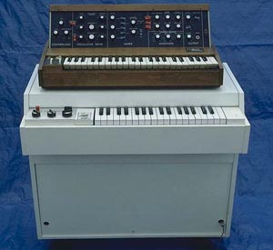
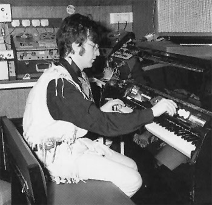
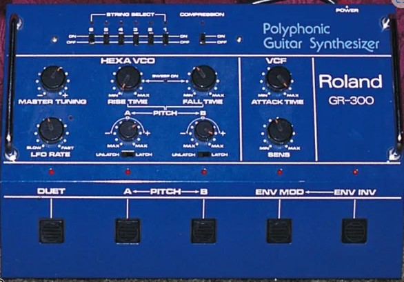
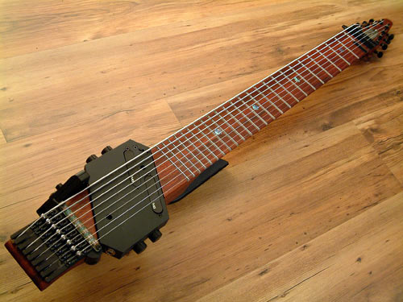
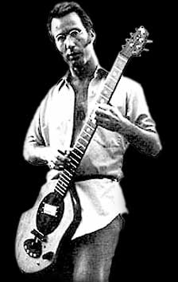
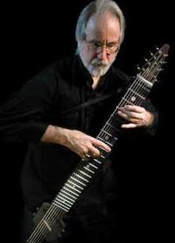
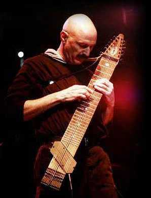

 |
Melotrón -
El melotrón (mellotron en inglés; su nombre surgió del término
"melodía electrónica") es un instrumento
musical electro-mecánico polifónico que se comercializó a principios de los años ‘60.
Exteriormente no se diferenciaba demasiado de un piano convencional, y al
principio se encajaba en una elegante caja de madera. Se trata de un teclado
capaz de reproducir cintas pregrabadas en tres canales con sonidos reales de
diferentes instrumentos. El melotrón fue uno de
los primeros teclados eléctricos y puede considerarse como el antecedente
directo del sampler, pues utiliza loops de cinta para reproducir sonidos. Cada tecla
está asociada a una cinta magnética de casi 1 cm de ancho que tiene una
duración aproximada de 8 segundos. El músico, al presionar una tecla, hace
circular su cinta correspondiente que recorre un ingenioso sistema en forma de
W, y reproduce su sonido pregrabado (instrumento de cuerda o de
viento, voz, etc.). Luego de la reproducción del sonido, la cinta
vuelve a su posición original automáticamente. Una desventaja del melotrón
era la
incapacidad del mismo para grabar sonidos, por lo que las cintas debían ser
grabadas previamente utilizando otro mecanismo que poseían los fabricantes; el otro inconveniente importante era que cada vez que se lo transportaba de un lugar a otro
había que calibrarlo, por lo que se necesitaba de una persona con conocimiento
del aparato en las giras. Uno de los primeros músicos en comprar un melotrón
fue John Lennon en 1965 (en la foto de la izquierda se lo ve investigando el instrumento, modelo Mk2,
en el '67). El melotrón se hizo famoso por su aparición en el tema Strawberry
fields forever de The Beatles a principios de 1967, tocado por Paul McCartney para reproducir un ensamble de
flautas en la introducción. Meses después Lennon lo tocó
en el otro tema en el que The Beatles usó melotrón, una pieza
instrumental llamada Flying. A fines de ese año la banda The Moody
Blues lo usó en su segundo disco, Days of Future Passed. En 1968 lo
tocó Richard Wright en el tema Julia dream, de Pink Floyd. En 1969 Rick Wakeman lo usó en el tema Space
Oddity grabado por David Bowie, y Ian McDonald lo tocó en el album
debut de King Crimson. Fue adoptado a principios de los ’70 por
otras bandas de rock progresivo, como Genesis y Yes; también fue utilizado
eventualmente por Led Zeppelín, por ejemplo en los temas The rain song
(1973), Kashmir
(1975) y la version en vivo de Stairway to heaven. Fue desplazado poco a
poco por la aparición de los
modernos sintetizadores polifónicos y los samplers.
|
Diagramas que muestran el funcionamiento del melotrón:
 |
Cuando la tecla es
pulsada:
* un rodillo presiona
la cinta contra el cabrestante (en el gráfico, de color violeta), que comienza a
girar para hacer avanzar la cinta, la cual es depositada en el colector.
* el resorte de retorno se estira hacia arriba para que la
cinta pueda avanzar.
* una palanca con una almohadilla en un extremo presiona la
cinta contra el cabezal para que se reproduzca el sonido grabado.
|

|
Cuando la tecla es liberada:
* se liberan la palanca con almohadilla y el rodillo que
presionaba sobre el cabrestante.
* el cabrestante deja de girar.
* el resorte de retorno se contrae hacia abajo para estirar la
cinta nuevamente, salga del colector y vuelva a su estado original.
|
Sintetizador - Un sintetizador es un instrumento musical electrónico
diseñado para producir sonido generado artificialmente, usando diferentes
técnicas (síntesis aditiva, substractiva, de modulación de frecuencia, de
modelado físico o modulación de fase). El sintetizador crea sonidos mediante
manipulación directa de corrientes eléctricas (como los sintetizadores
analógicos), mediante la manipulación de una onda FM digital (sintetizadores
digitales), manipulación de valores discretos usando computadoras
(sintetizadores basados en software), o combinando cualquier método. En la fase
final del sintetizador, las corrientes eléctricas se usan para producir
vibraciones en altavoces, auriculares, etc. A pesar de que los primeros
sintetizadores fueron construidos en la década del '20, no fue hasta los años
‘60 que comenzaron a popularizarse. Su desarrollo tuvo lugar principalmente en
los laboratorios de electrónica de las universidades de los Estados Unidos.
Allí, algunos pioneros como Bob Moog construyeron prototipos de sintetizadores
e hicieron demostraciones. Al principio, el sintetizador era visto como algo
puramente experimental y elitista, quizá por el hecho de que sólo algunos
artistas de la vanguardia se atrevieron a componer música hecha para
sintetizadores. En 1968, un músico llamado Walter Carlos, en colaboración con
Moog, grabó una serie de obras de Johann Sebastian Bach en un disco llamado
"Switched-on Bach" (más conocido en los países de habla hispana como
"Bach Electrónico"), usando un sintetizador Moog modular y una grabadora de 4 pistas.
El álbum fue recibido con inusual atención, fue el primer álbum de música clásica en obtener un premio Grammy y
en vender un millón de copias, y probó al gran público que el sintetizador
podía ser adaptado a la música tradicional. En 1969 Los Beatles usaron
sintetizador Moog en varias canciones del album "Abbey Road". Con el surgimiento de un nuevo
mercado los fabricantes diseñaron modelos más pequeños como el Minimoog, y
comenzaron a aparecer fábricas en Japón de la mano de marcas como Roland y
Yamaha. Los nuevos estilos musicales de los '70, como el rock progresivo,
demandaban nuevos sonidos y el sintetizador fue adoptado por bandas como Pink
Floyd, Emerson Lake & Palmer, Genesis, Yes, Gentle Giant. Los músicos que
más lo usaron durante los ’70 fueron Keith Emerson (de Emerson Lake &
Palmer) y Rick Wakeman (con Yes y como solista). En esa época los
sintetizadores eran usados para agregar sonidos novedosos a los instrumentos ya
existentes, pero con la llegada de la tecnología digital fue posible que
comenzaran a emular instrumentos, como vibráfonos y pianos eléctricos. En la
foto de abajo, Emerson.
 En la formación de los
'80 de King Crimson, Fripp y Belew usaron el sintetizador de guitarra Roland GR-300
|

|
Stick - El Chapman Stick o stick es un instrumento musical
electrónico ideado por el luthier californiano Emmett Chapman a principios de
los años ’70. Al comienzo Chapman lo llamó
"The electric stick" ("El palo eléctrico"). Los primeros modelos fueron distribuidos en 1974 y contaban con
7 cuerdas. Chapman quiso crear un instrumento que incluyera bajo y guitarra, y
se ejecutara utilizando la técnica de "tapping", consistente en tocar
el instrumento por el cuello de éste con ambas manos simultáneamente
presionando o golpeando las cuerdas sobre el diapasón. A diferencia de
la guitarra y el bajo, que necesitan la pulsación de cuerdas con una mano y pisarlas con
la otra, el stick únicamente requiere pisarlas o trastearlas, y por lo tanto
pueden usarse ambas manos, cada una haciendo lo suyo. Por esta razón, permite la ejecución de múltiples notas cualquiera sea
la distancia tonal. Esta propiedad hace del stick un instrumento poco común, ya
que se compara más con un teclado que con una guitarra. Este tipo de ejecución
permite que el instrumentista ejecute bajos, acordes y melodías en forma
simultánea. El instrumento que el mismo Chapman sigue fabricando, ha
evolucionado desde su origen de 7 cuerdas, existiendo en la actualidad
diferentes modelos: de 8 cuerdas (Stick Bass, especial para bajistas); 10
cuerdas (Standard Stick) y 12 cuerdas (Grand Stick), ambos especiales para
componer debido a su distribución armónica. Levin fue quien popularizó el uso
del instrumento a través de sus apariciones con King Crimson y con Peter Gabriel.
|
 |
 |
 |
Izquierda: Chapman en 1970 con un prototipo de stick. Centro:
Chapman haciendo tapping en el siglo 21. Derecha: Levin con su stick.
|
|
|
|

|
Trey Gunn, miembro de la liga de Guitar Craft desde sus orígenes, adoptó el stick
en 1987 como su instrumento. Más adelante comenzó a tocar la Warr Guitar
(también llamada touch guitar), una
variante del stick desarrollada por Mark Warr, pero con cuerpo. Tiene entre 7 y 15 cuerdas, y
puede tocarse posicionándola verticalmente haciendo tapping como en el stick u
horizontalmente como con una guitarra. Abajo, Gunn ejecutando su Warr Guitar.

|
|
 Instrumentos
Instrumentos